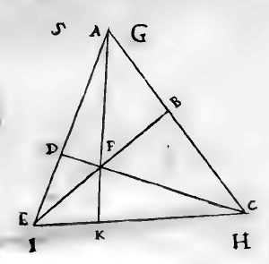

Propositio II · Problema II · Elementum II¶


PROP. II. PROB. II. ELEM. II. (tab. 1. fig. 5)
In triangulo :g:`AEC` ductis ex tribus angulis per idem punctum :g:`F` rectis :g:`AK`, :g:`EB`, :g:`CD` ad latera opposita; rationes omnium segmentorum staticè determinare.
Positis in angulis A, E, C ponderibus G, I, H, ita vt D sit centrum grauitatis ipsorum G, I, & B ipsorum G, H; erit F commune centrum grauitatis trium ponderum G, H, I. Sed recta AK per A et F ducta transit necessario per centrum grauitatis duorum ponderum I, H in basi EC positorum; igitur K est centrum grauitatis ipsorum I, H. Quare erit EK ad KC vt pondus H ad pondus I; & AF ad FK vt summa ponderum I, H ad pondus G. Scholium: Ex his patet rationem compositam ex tribus laterum rationibus æqualem esse rationi æqualitatis.
f. 0021 · p. p. 4